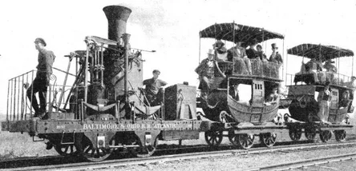

История поезда: изобретение и развитие железнодорожного сообщения
История поездов охватывает период последних двухсот лет современной человеческой цивилизации, когда это невероятное открытие использовалось для того, чтобы кардинально изменить промышленность, повлиять на распространение человечества и способы путешествия.
С тех пор как первый паровоз проехал по железным дорогам индустриальной Англии в начале 1800-х годов, поезда помогали людям развивать цивилизацию. Отдаленные земли стали доступными, промышленное производство снабжалось бесконечным количеством сырья и обеспечивалась транспортировка готовой продукции.
Сегодня они используются по-разному: от небольших городских трамваев, метро, поездов дальнего следования до грузовых и скоростных составов, которые могут достигать скорости 300- 500 километров в час. Однако их история началась с гораздо более простых и медленных проектов. Древние цивилизации Греции и Египта, а также индустриальная Европа (1600-х-1800-х гг.) использовали лошадей в качестве основных источников вождения для перемещения простых вагонов.
Появление первых паровых двигателей в начале 19-го века позволило инженерам создать новый вид транспорта, который был приспособлен для перевозки гораздо большего количества материалов, чем когда-либо до этого.
Изобретение железнодорожной техники
Самый первый поезд в мире появился в 1804 году. Он смог провезти 25 тонн железного материала и 70 человек на расстояние 10 миль (16 километров).
В течение истории поезда ходили на пару, электричестве и дизельном топливе (хотя один из самых ранних поездов в США работал на лошадях). В настоящее время они перевозят около 40 % мирового груза.
Первый коммерческий поезд (Stephenson's The Rocket) смог достичь скорости 96 км/ч. Сегодняшние модели могут проходить на скорости выше 200 км/ч, а специальные "поезда-пули" – более 500.
Железнодорожный транспорт - это совокупность поезда и рельсовых систем, посредством которых осуществляется перевозка пассажиров и грузов с помощью колесных транспортных средств, специально предназначенных для движения по колее. Это быстрый, эффективный, но капиталоемкий способ механизированного наземного транспорта. Это часть логистической цепочки, которая облегчает международную торговлю и экономический рост в большинстве стран.
Поезда и рельсовые системы состоят из двух компонентов: те, которые перемещаются, и которые фиксированы. Компоненты, которые движутся, называются подвижным составом - локомотивы, пассажирские и грузовые транспортные средства. Фиксированные включают железнодорожные пути (с их несущими конструкциями) и вспомогательные здания.
.jpg)
История железнодорожных путей сообщения
Самое ранний прототип железной дороги – это шестикилометровая дорога Диолькос, по которой перевозили лодки через перешеек Коринфа в Греции в шестом веке до н. э. Грузовики, подталкиваемые рабами, двигались в канавках в известняке, которые не позволяли вагонам покидать предполагаемый маршрут. Эта дорога просуществовала более 1300 лет вплоть до 900 г. н. э.
Рельсы из железных пластин
Первые железные дороги в Великобритании были построены в начале семнадцатого века главным образом для транспортировки угля с рудников на причалы канала, где его можно было перенести на лодку для последующей перевозки. Самые ранние зарегистрированные примеры - Wollaton Wagonway в Ноттингемшире и Bourtreehill - Broomlands Wagonway в Ирвине, Эйршир. Рельсы тогда были деревянными и их приходилось часто менять.
В 1768 году завод Coalbrookdale Iron Works наложил чугунные пластины поверх деревянных рельсов, обеспечивая более прочную несущую поверхность. Позднее они были использованы Бенджамином Уртамом в его литейном заводе в Рипли, Дербишир, где в первый раз были выпущены стандартизованные элементы путей. Преимущество заключалось в том, что можно было бы значительно варьировать расстояние между колесами. С конца восемнадцатого века стали появляться железные рельсы. Британский инженер-строитель Уильям Джессоп разработал гладкие аналоги, поставив их на маршруте между Лафборо и Нанпантаном, Лестершир, в качестве дополнения к каналу Чарнвуд-Форест в 1793-1794 годах. В 1803 году Джессоп открыл в Суррей на юге Лондона, возможно, первую в мире конную железную дорогу.
Первые железнодорожные линии
Самые ранние составы состояли из конных экипажей на деревянных дорожках, некоторые из которых были построены еще в 16 веке. Первой рельсовой колеей, которая работала с паровозом, была трамвайная линия от Железного завода в Пенидаррене в Мертире Тидфил, Уэльс. 21 февраля 1804 года локомотив успешно провез 10 тонн железа и 70 пассажиров с максимальной скоростью 5 миль (8 км) в час по 9-мильной железной дороге (около 14,5 км). Этот ранний эксперимент с паром был признан успешным, но вес локомотива повредил дорогу.